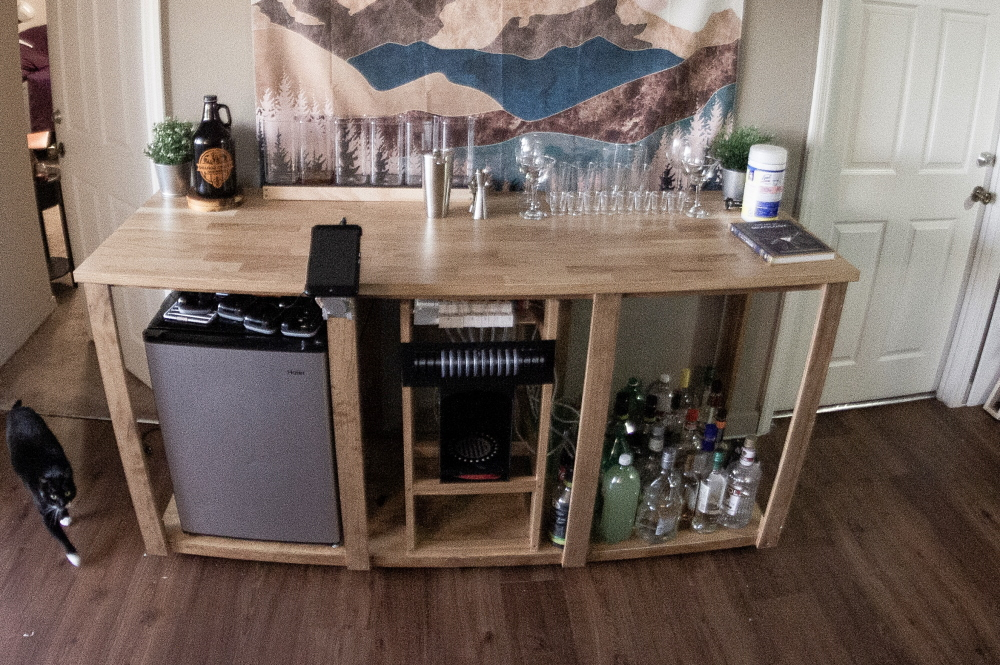
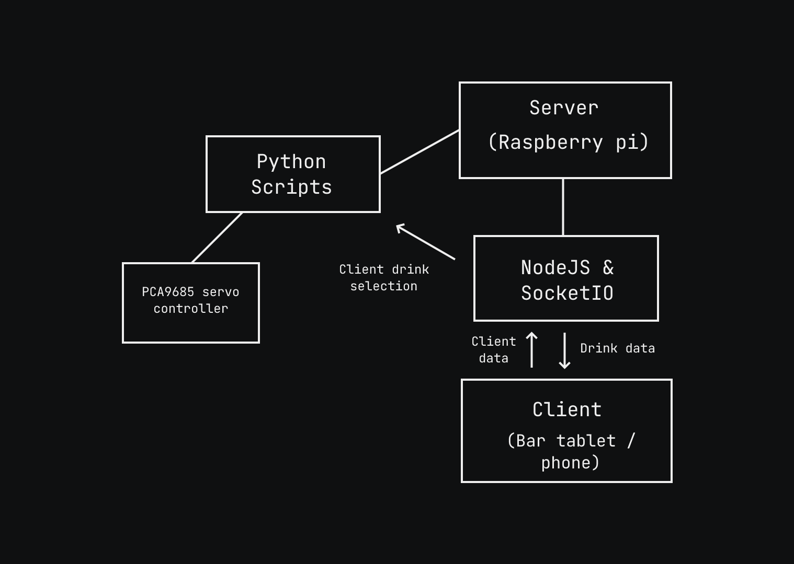
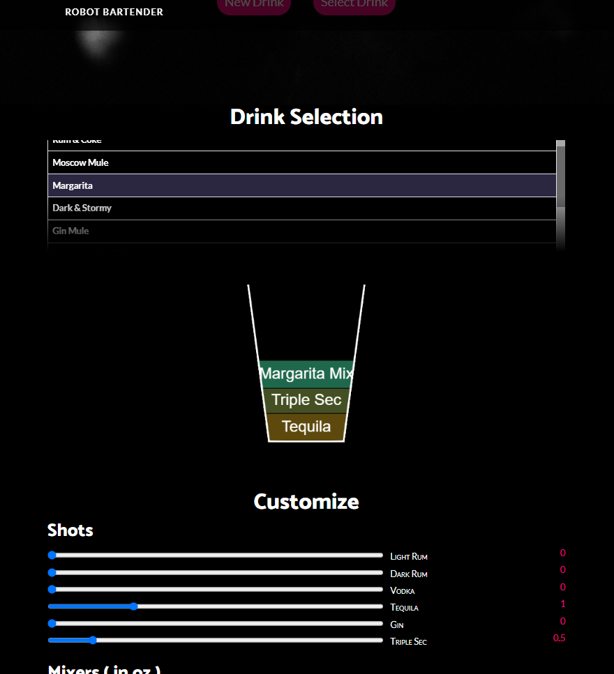
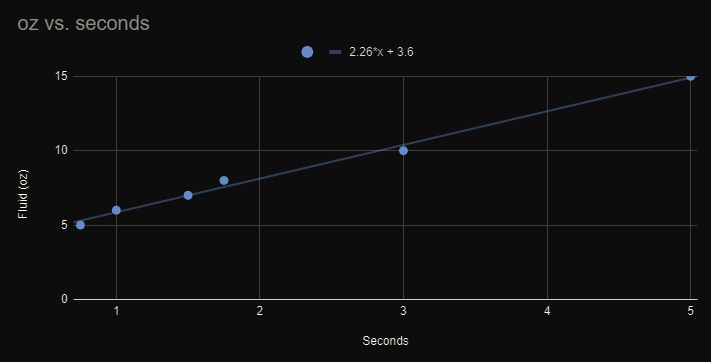
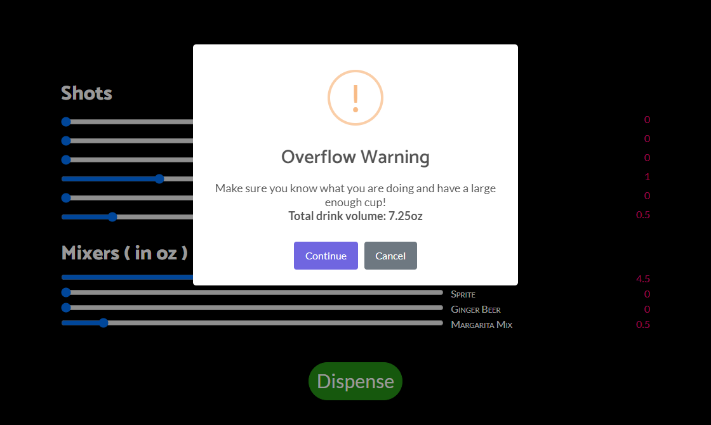

Bartender Bot
Overview
The bar uses 6 servo-controlled valves to dispense the drinks, and 4 air pumps connected to a relay board to dispense the mixers.

Back-End
For this project, I used Nodejs and the SocketIO library for realtime client > server communication.
The pi emits the local webserver you can connect to from any device on the network, including a windows tablet attatched to the bar.
The client then sends the drink selection data back to the server, and the server passes that data to a python script.

I used python as the glue for the drink dispensing as the libraries for the motor controller (PCA9685) are widely avaliable at the time of writing this, and the synchronous nature of python code makes handling the time-based dispensing easy.
Note: Since our raspberry pi is emitting a local webserver, we can use both a tablet connected to the bar, as well as any device connected to the wifi network
Front-End
The Front-end is built from scratch using Bootstrap, CSS, and HTML, with some extra javascript bits to make everything look nice.
I wanted there to be a list of drinks to choose from, as well as some additional customization options alongside it, so the user could tweak it to their liking.
I also made a neat little drink visualizer so you can get an idea of the drink composition :)

You can try out the full UI in your browser through the following link…
Try out the bar UI
Machine Calibration
To calibrate the bar, a series of timed test runs are performed. Once you have done a fair amount of test runs you can plot the time vs amount of fluid dispensed and edit a line of python code that correlates to the linear equation.

line 8 below corresponds to our equation 2.26*x + 3.6 (dArg is our X value)
|
|
Failsafes
To prevent the overflow of fluid, I’ve set soft and hard limits in the code that will notify the user if they’re nearing (or have hit) these limits.
